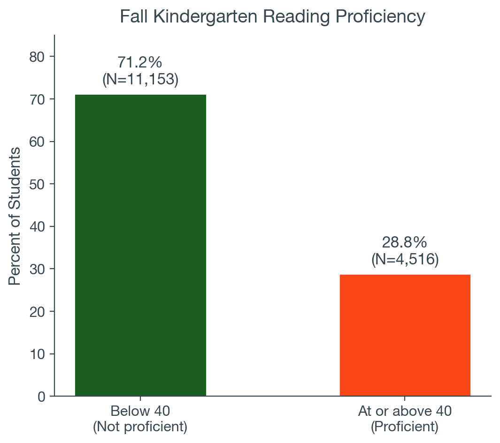
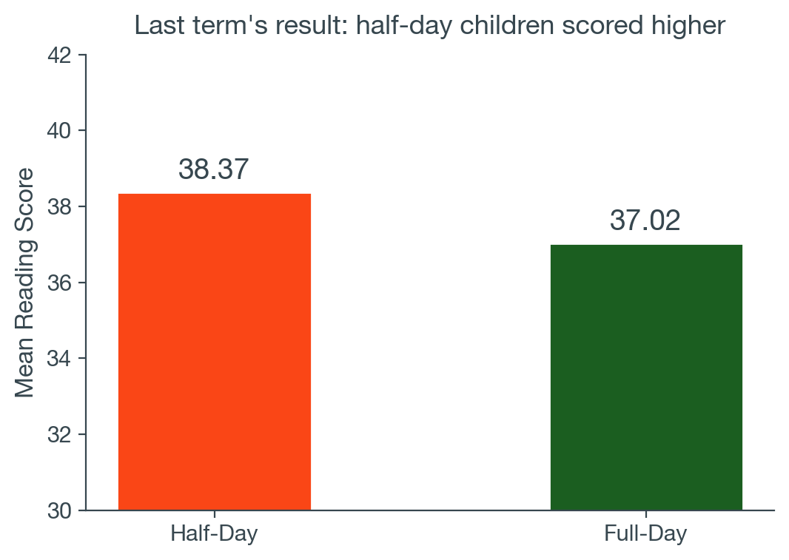
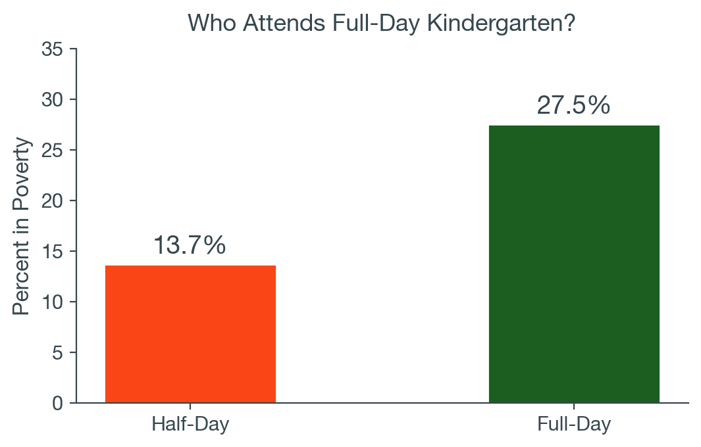
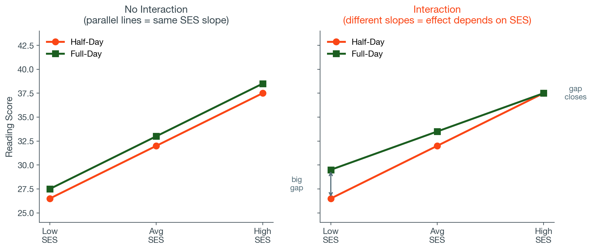
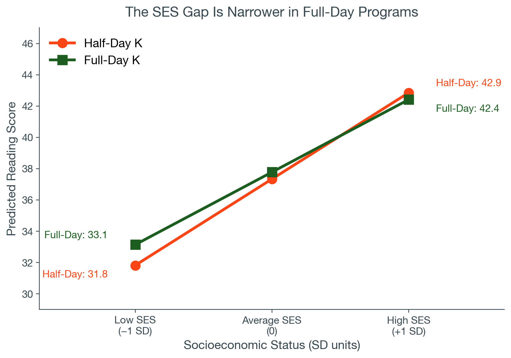

Binary outcomes and effects that depend on context
EDA6427 | Applied Education Policy Research
Beyond “How Much?”
Every regression we have run predicts a continuous score: how high a child scores on reading or math. Many questions in education are not about how much. They are about whether.
Does this child meet reading proficiency?
Does this family choose private school?
Is a child identified for special services?
Does full-day kindergarten narrow the achievement gap?
PlayPosit Prompt
Think of an education policy question where the answer is yes or no. What would you need to measure?
Where We Are
1
Last term: correlation, bivariate regression, and multiple regression with controls. Continuous outcomes throughout.
2
Module 1: regression review with statistical controls, reading a published results table, and data management.
3
Today: binary outcomes, interaction terms, model fit statistics, and building regression tables.
The regress command does not change. The questions it can answer do.
Part 1
Binary Outcomes
From Scores to Decisions
A continuous score tells you where a child falls on a scale. A decision asks whether a child crosses a threshold.
Proficiency cut scores determine who receives intervention
Eligibility thresholds determine who receives services
Graduation is binary: the student completed the requirements or did not
We can still use regress to predict a yes/no outcome. The interpretation changes. The command does not.
Creating a Binary Outcome Variable

gen proficient = (x1rscalk1 >= 40) if !missing(x1rscalk1)
tab proficient
The variable proficient equals:
1 if the child scored 40 or above
0 if the child scored below 40
About 29 percent of fall kindergartners meet this threshold.
The Linear Probability Model
When we run regress with a 0/1 outcome, we get what is called a linear probability model.
regress proficient x12sesl female fullday
Each coefficient is now the change in the probability of the outcome, in percentage points, for a one-unit increase in the predictor.
If the SES coefficient is 0.18: a one-standard-deviation increase in SES is associated with an 18 percentage-point increase in the probability of reading proficiency.
The outcome is 0/1, so every coefficient is in percentage points rather than score points.
Interpreting the Coefficients
SES = 0.18*** A one-standard-deviation increase in SES is associated with an 18 percentage-point increase in the probability of proficiency.
Female = 0.04*** Girls are about 4 percentage points more likely to be proficient than boys, holding SES and program type constant.
Full-day = 0.01 (not significant) Full-day kindergarten is not distinguishable from zero once SES and gender are held constant.
PlayPosit Question 1
A study finds that having a college-educated parent is associated with a 0.15 increase in the probability of kindergarten reading proficiency, estimated with a linear probability model. What does this mean?
Children of college-educated parents score 15 points higher on reading
Children of college-educated parents are 15 percentage points more likely to be proficient
College-educated parents are 15% of the sample
The coefficient is not statistically significant because it is less than 1
What LPMs Can and Cannot Do
Strengths
Uses the regress command you already know
Coefficients are easy to interpret, in percentage points
Widely used in education, economics, and policy research
Limitation
The model can predict probabilities below 0 or above 1
A very high-SES child might get a predicted probability of 1.05, which is not a probability
Logistic regression handles this by forcing predictions between 0 and 1. You will see it in published work. We do not estimate it in this course, and for most applied purposes the linear probability model is both acceptable and easier to read.
Part 2
Interaction Terms
A Result From Last Term

In the t-test module last term, we compared reading scores by kindergarten program type. Half-day children scored higher: 38.37 against 37.02, a difference of 1.35 points with p < .001.
That result was surprising. Does half-day kindergarten produce better readers?
We flagged at the time that this was unlikely to be causal, without the tools to look further.
Now we have them.
The Selection Problem

Full-day and half-day programs serve different populations. About 13.7 percent of half-day children are in poverty, against 27.5 percent of full-day children.
Higher-SES families are more likely to choose half-day programs, so the raw comparison confounds program type with family background.
Holding SES constant changes the picture, which is what the next few slides do.
What If the Effect Is Not the Same for Everyone?
Holding SES constant, full-day kindergarten looks slightly positive on average. But does it do the same thing for every child?
Full-day programs might matter more for children from lower-SES households, where additional hours of instruction could partly substitute for resources available at home.
Or the association might be the same across the SES range, or absent entirely.
An interaction term lets us test whether the association between one variable and the outcome depends on the value of another variable.
What Is an Interaction?

If the lines are parallel, there is no interaction. If the slopes differ, there is.
b₂ is the SES slope when Full-Day = 0, that is, for half-day children
b₂ + b₃ is the SES slope when Full-Day = 1
b₃ is how much the SES slope changes for full-day children
Creating the Interaction Term
* Create the product of fullday and SES
gen fullday_ses = fullday * x12sesl
* Run the interaction model
regress x1rscalk1 fullday x12sesl fullday_ses
The interaction term is the product of the two variables.
When fullday is 0, the product is 0, so the interaction drops out and the SES coefficient alone gives the SES slope.
When fullday is 1, the product equals SES, so the interaction coefficient is added to the SES coefficient.
Stata can build this automatically with fullday##c.x12sesl. Creating the variable yourself keeps the mechanics visible, which is why we do it this way first.
The Model Without the Interaction
First the main-effects model, with no interaction term:
fullday = 0.44* The full-day difference for a child at average SES, where SES = 0. About half a reading point.
x12sesl = 5.51*** The SES slope for half-day children, where fullday = 0. Each standard deviation of SES predicts 5.5 more reading points.
fullday_ses = −0.88*** How much the SES slope changes for full-day children. The slope is 0.88 points less steep, so the SES gap is narrower in full-day programs.
PlayPosit Question 2
The SES slope for half-day children is 5.51. The interaction term is −0.88.
What is the SES slope for full-day children?
5.51 + 0.88 = 6.39
5.51 + (−0.88) = 4.63
−0.88, because the interaction replaces the main effect
5.51 × −0.88 = −4.85
Visualizing the Interaction

The lines are not parallel. The SES slope is 5.51 in half-day programs and 4.63 in full-day programs.
PlayPosit Question 3
Looking at the figure, which group shows the largest full-day difference?
High-SES children, because they score highest overall
Average-SES children, because the lines cross near the middle
Low-SES children, because the vertical gap between the lines is widest at the left
The difference is the same at every SES level, because the lines are parallel
Writing Up an Interaction
After controlling for socioeconomic status, full-day kindergarten was associated with a modest increase in reading scores for the average child (b = 0.44, p = .035).
The relationship between SES and reading differed by program type. The SES slope was 5.51 points per standard deviation for half-day students and 4.63 for full-day students (interaction b = −0.88, p = .001).
This pattern suggests that the SES gap in early reading is narrower in full-day programs.
What a good interaction write-up includes:
Both the main effects and the interaction
The implied slopes for each group, computed for the reader
The direction stated in plain language
Part 3
Model Fit
How Well Does the Model Fit?
Every regression you have run printed these numbers at the top right. We have mostly read past them. They answer a different question from the coefficients.
A coefficient answers: how is this predictor related to the outcome?
A fit statistic answers: how much of the outcome does the whole model account for?
A model can contain a highly significant predictor and still account for very little of the variation. Significance and fit are separate questions, and reporting one without the other gives an incomplete picture.
R-Squared and Adjusted R-Squared
R-squared is the share of variation in the outcome accounted for by the model. Our interaction model has R-squared of 0.1588, so it accounts for about 16 percent of the variation in reading scores.
R-squared has one property worth knowing: it can only rise when you add a predictor. Even a variable with nothing to contribute will nudge it upward.
Adjusted R-squared applies a penalty for each predictor. It rises only when a new variable earns its place, and it can fall.
A low R-squared does not mean the relationship is unimportant. It means other things also matter, which is nearly always true of educational outcomes.
The F-Statistic
The F-statistic tests one question: taken together, do the predictors account for more variation than chance would produce?
Full-day only
Add SES
Add interaction
Observations
14,896
13,444
13,444
R-squared
0.0029
0.1581
0.1588
Adjusted R-squared
0.0028
0.1579
0.1586
F-statistic
42.60
1261.80
845.79
Root MSE
9.588
8.919
8.916
Between the second and third models, R-squared rises while F falls. Both are correct.
PlayPosit Question 4
A researcher adds four control variables to a model. R-squared rises from 0.31 to 0.33, and adjusted R-squared falls from 0.30 to 0.29.
What is the most reasonable conclusion?
The model improved, because R-squared went up
The new variables added little beyond the penalty for including them
The new variables are all statistically significant
The model is now 33% accurate
Part 4
Regression Tables
From Producer to Consumer
So far you have produced every regression table you have read. You ran the code, saw the output, and interpreted the results.
In practice you will also read tables produced by other researchers, in journal articles, evaluation reports, and policy briefs.
The skills are the same. The Stata output is not there to guide you.
A Regression Table from a Study
Model 1
Model 2
Model 3
SES
5.96*** (0.10)
5.74*** (0.12)
6.10*** (0.16)
Female
−0.75*** (0.19)
−0.73*** (0.19)
Non-English home language
−1.89*** (0.26)
−1.89*** (0.26)
Disability
−2.53*** (0.24)
−2.51*** (0.24)
Female × SES
−0.73** (0.23)
Constant
31.00*** (0.08)
32.48*** (0.15)
32.47*** (0.15)
Observations
14,041
11,335
11,335
R-squared
0.193
0.207
0.208
Outcome: fall kindergarten math score. Standard errors in parentheses. * p < .05 ** p < .01 *** p < .001
What to Look For
1
What is the outcome? The title or header tells you what is being predicted.
2
What are the predictors? The leftmost column. Note which are added across models.
3
How big are the effects? Use the outcome’s scale to judge whether a coefficient is practically meaningful.
4
Which are significant? Check the stars against the footnote.
5
How well does the model fit? R-squared, and adjusted R-squared if reported. Does it improve across models?
6
Is there an interaction? A product term such as “Female × SES” tests whether one association depends on another.
Walking Through the Table
Outcome: fall kindergarten math score.
Model 1, SES only. SES is 5.96 and highly significant. R-squared is 0.193.
Model 2, adding demographics. SES falls to 5.74, so part of what looked like an SES association was shared with the demographic variables. Female is −0.75, non-English home language is −1.89, and disability is −2.53. R-squared rises to 0.207.
Model 3, adding an interaction. Female × SES is −0.73, significant at the .01 level. The SES slope is less steep for girls.
SES slope for boys: 6.10 SES slope for girls: 6.10 + (−0.73) = 5.37
PlayPosit Question 5
In the table, what happens to the SES coefficient between Model 1 and Model 2?
It increases, meaning SES matters more once controls are added
It decreases from 5.96 to 5.74, meaning some of the SES association was shared with the demographic variables
It stays the same, meaning the demographic variables are unrelated to math scores
It becomes non-significant
Looking Ahead
Next module: Working with Test-Score Data
Scale scores, proficiency rates, and standardized scores
Gain scores and growth measures
What test scores can and cannot tell you about a school
Applied Data Analysis Assignment 1 is due at the end of next module. Part 4 asks you to interpret R-squared, adjusted R-squared, and the F-statistic from your own output.